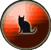

|

|
>> Содержание / Список кланов /
MCats
С чего все началось?- спросите вы меня.
-Ой , да сам я там не был, я знаю это по легендам,
что мой дед рассказывал мне, тогда ещё маленькому котёнку
…давно это было, очень давно…
Мы всегда жили рядом, коты и люди.
Разные они, люди, злые и добрые, грустные и веселые,
одни любили нас,
другие – сторонились, некоторые делили с нами свои дома, кормили нас, лелеяли.
На их заботу мы отвечали теплом и лаской.…
При этом продолжали оставаться сами по себе.
Здесь ,в этих местах, где мы живем теперь, была людская община.
Эти люди не строили машин и больших городов, они верили в магию…
Однажды они нашли КНИГУ, книгу, которую Боги спрятали от глаз людей,
так как людям было запретно это знание.
Но люди любопытны и неосторожны, они всё же стали изучать Книгу,
использовать заклинания в повседневной жизни.
Некоторые пошли еще дальше, они увлеклись темной магией.
Конечно, ничем хорошим это закончится, не могло.
Однажды темной безлунной ночью свершилось Великое Противостояние.
Последователи Темных Сил решили открыть Врата в Другие Миры,
призвать Древнее Зло, Древних богов и Чудовищ, уже забытых людьми.
Они жаждали той власти и силы, что принесут в этот мир Древние боги и демоны их слуги.
Поклонники Света противостояли им.
Много сил было потрачено в эту ночь, много заклинаний произнесено.
Великой была та страшная битва…Мир вокруг содрогнулся, наблюдая за множеством смертей,
Земля стала бесплодной, большая часть людей погибла. И лишь горстка самых стойких людей выжила
став другими,
Мы тоже выжили и наблюдали за возрождением человечества.
Мы стали разумны, научились использовать магические силы, пришедшие в ту ночь, стали понимать язык людей, различать где Добро, а где - Зло .
Мы остались жить вдали от людей, мне кажется они никогда не смогут понять и принять нас.
Мы самые мистические существа в этом мире, мы любим лунный свет и мягкие серые тени.
Мы загадочны и непостоянны, Мы- MysticalCats
Официальный сайт клана: http://mcats.clan.su
|
 |
|